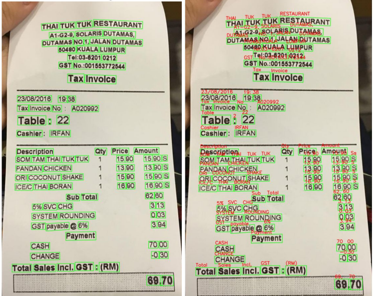
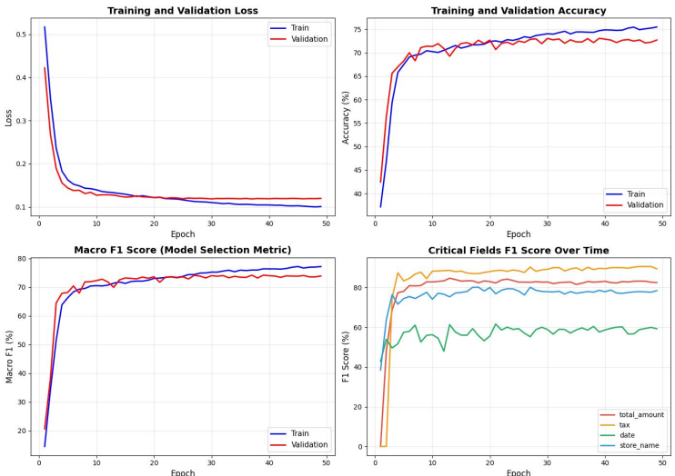

ReceiptNet: Automating Expense Tracking with a Spatial-Textual LSTM

Overview
Built an end-to-end deep learning pipeline that reads a photo of a receipt and pulls out the fields needed for expense tracking: store name, date, total, and tax. Receipts vary widely in layout and OCR introduces character errors, so the pipeline combines text detection, OCR, and a sequence model that uses both what each line says and where it sits on the receipt.
What we built
- Trained and evaluated on 11,872 receipt images: 1,872 real and 10,000 synthetic.
- Detected text regions with the CRAFT model and read them with Tesseract OCR, producing the text and bounding box for each region.
- Classified each line with a spatial-textual LSTM that combines the text with its position, labelling lines as store name, date, total, tax, subtotal, item name, item price, or other.
- Compared EasyOCR and Tesseract, and chose Tesseract because it reads special characters ($, %, :, /, #) more reliably. These characters are what separate prices, dates, and times on a receipt.
- Switched from word-level to line-level input, so the model sees a label like "TOTAL" together with its value instead of classifying each word in isolation.
- Reached about 73% validation accuracy and 74% macro F1 over 50 epochs with no severe overfitting. Tax and total amount had the highest F1 scores of the key fields.
Results

CRAFT detection (left) and Tesseract recognition (right) on a sample receipt, with 103 text regions found.

Training and validation loss, accuracy, and macro F1, plus F1 for the key fields over 50 epochs.
Lessons learned
- The choice of OCR matters. OCR errors become model errors, so a weaker OCR engine costs accuracy downstream.
- Don't classify words in isolation. Receipts encode meaning through structure, so line-level context works better than token-level context.
- Labeling strategy affects accuracy. Automatic OCR labeling is fast but carries OCR mistakes into training. Auto-labeling with human correction gives cleaner data, and high-quality data beats more data.
Tools
Python, Google Colab, CRAFT text detection, Tesseract OCR, LSTM